ScriptSense is a project-aware static analysis and workflow tool for Roblox Studio, designed to bring professional-grade tooling to Luau development. It enhances the Roblox Script Editor with intelligent automation and real-time safety tools. It understands what you type, prevents broken references, and keeps your workflow clean and fast without getting in the way.
Why ScriptSense?
- Type Safety : Catch bugs before you run your game with live type checking.
- Workflow Automation : Automate repetitive tasks with custom macros and commands.
- Project Awareness : Understands your entire project, not just individual scripts.
Key Features
- Live-Analysis : Deep analysis of your codebase to find errors, style issues, and potential performance bottlenecks.
- Safety : Built for safety, using robust checks to handle edge cases, requiring user conformity to execute tasks carefully, and providing the ability to undo (and redo) actions.
- Extensibility : Write your own rules, macros, and commands to tailor ScriptSense to your, and your team’s workflow.
Demo Video
- Note: This demo video is temporary and will be shortly replaced after formal publication.
Getting Started
ScriptSense is designed to be “add it and forget it.”
Once installed, you can simply open a script and ScriptSense will surface useful project info automatically (code health, tasks, unused variables, broken paths, and more). The terminal / command palette is optional.
Install
-
Open the ScriptSense asset page and add it to your inventory:
https://create.roblox.com/store/asset/75708311511053/ScriptSense
-
In Roblox Studio, install it from either:
- Your inventory (Plugins → Manage Plugins / My Plugins), or
- Toolbox → Plugins tab → find ScriptSense → install
-
That’s it.
First Use
- Open any script (Script / LocalScript / ModuleScript).
- ScriptSense will show a widget with live insights like:
- Code health
- Tasks (TODO/FIXME/HACK)
- Unused variables
- Broken paths / dependency issues
- Other project signals depending on what’s available
You don’t need to run a command for this.
Optional: Open the Command Palette / Terminal
If you do want to use commands:
- Open the Plugins section in the Studio toolbar and open ScriptSense’s palette/terminal from there.
Some useful first commands:
help— list commands / get help for one commandscan— scan for issues and dead codetasks— open the Tasks hubdocs— open this documentationtheme— change theme presets / tweak UI colors
Troubleshooting
I installed it, but nothing shows up
- Try opening a script first and add something like
getfenv()(ScriptSense reacts to an active script). - Make sure the plugin is enabled in Studio (Plugin Management).
The terminal isn’t showing
- The terminal is optional. ScriptSense features still work without it.
- Open it from the Studio toolbar’s Plugins section.
🚧 Work in Progress
This page is currently under construction.
Content, examples, and detailed explanations will be added soon.
ScriptSense is actively evolving, and documentation is being expanded alongside new improvements.
In the meantime, you can:
- Use
helpinside ScriptSense for quick command guidance. - Explore the existing Command Reference.
- Check the latest release notes for updates.
Thank you for your patience.
CLI Commands
ScriptSense comes with a Command Palette within the toolbar to manage your projects.
Square brackets, [], mean the item is required.
(), mean the item is optional.
Core & General
scan
Runs the Path Doctor to scan the project for errors and dead code.
- Usage: scan (Name)
- Options:
- Name: Scan a specific instance and its descendants. If Name is omitted, scans the current selection if any; otherwise scans the active script; otherwise scans the whole game.
help
Lists all commands or explains a specific one.
- Usage: help (PageNumber) OR help (CommandName)
- Example: help rename
docs
Opens the internal knowledge base (GitHub Pages).
- Usage: docs (CommandName)
- Options:
- If
CommandNameis omitted, opens the docs homepage. - If
CommandNameis provided and matches a command module, opens thecommandspage anchored to that command section. - Matching is case-insensitive.
- If
- Example:
- docs
- docs scan
clear
Clears the terminal output.
- Aliases: cls
about
Displays the welcome screen, version info, and credits.
- Aliases: info, version
changelog
View the latest plugin updates and version history.
- Aliases: updates, changes, news
report
Sends feedback, bug reports, or suggestions to the author.
- Usage: report (Message)
- Options:
- If Message is omitted, opens the Feedback UI.
- You can prefix the message with bug, suggestion, or security.
- Example: report bug The terminal is flickering
- Example:

- Aliases: feedback, bug, suggestion, -n
- More: Reporting & Feedback
Refactoring & Code Editing
fix
Auto-fixes unused imports AND deprecated API calls.
- Usage: fix (Name) (-y)
- Options:
- Name: Target script or module. Defaults to active script.
- -y: Auto-confirm all changes without preview.
- Aliases: clean, optimize, repair
- Example:
- Before:

- After:

- Before:
rename
Safely renames a module and updates all require() calls referencing it.
- Usage: rename [OldName] [NewName] (-y)
- Example: rename DataManager PlayerData
extract
Extracts the currently selected code into a new local function.
- Usage: extract (FunctionName)
- Aliases: func, ex
- Note: Select the code lines in the editor before running.
guard
Converts a nested if statement into a guard clause (inverts logic and un-nests).
- Usage: guard
- Aliases: invert, unest
- Note: Highlight the if … then line before running.
- Example:

wrap
Wraps the selected code block in a specific statement (if, pcall, spawn, etc).
- Usage: wrap [type]
- Types: if, pcall, spawn, do, while
- Aliases: surround
lift
Moves all nested require statements to the top of the script.
- Usage: lift
- Aliases: hoist, raise
sort
Alphabetizes selected lines and ensures correct comma formatting. Useful for tables.
- Usage: sort
- Aliases: alphabetize, order
strip
Removes comments and empty gaps from the selected script.
- Usage: strip
- Aliases: nocomments, clean
fmt
Toggles a table between Single-Line and Multi-Line formatting.
- Usage: fmt
- Aliases: format, table
- Note: Highlight the table brackets { … }.
infer
Generates a Luau export type definition from the selected table.
- Usage: infer (TypeName)
- Aliases: type, gen
ignore
Attaches or removes the “SS_IgnoreCheck” attribute, preventing ScriptSense from scanning the script.
- Usage: ignore (Name) (-n)
- Options:
- -n: “Un-ignore” mode (Removes the attribute).
- -y: Auto-confirm.
- Aliases: ignores, ign
Navigation & Search
go
Opens a script, optionally at a specific line.
- Usage: go [Name] (Index) (:Line)
- Examples:
- go DataHandler (Opens script)
- go DataHandler:50 (Opens at line 50)
- go Script 2 (Opens the 2nd script named “Script”)
- Aliases: goto, open
jump
Jumps to a function definition within the currently active script.
- Usage: jump [FunctionName]
- Aliases: goto_func, func
refs
Finds all scripts requiring a specific module.
- Usage: refs [Name]
- Aliases: findrefs, usages
- Example:

tasks
Aggregates all TODO, FIXME, and HACK comments into a centralized hub.
- Usage: tasks (global|local)
- Options:
- local: show tasks for the currently open script.
- global: show tasks across the entire project.
- Example:

- Aliases: todo, board
- More: Tasks Hub
Analysis & Visualization
dashboard
Shows a high-level overview of Project Health, Tasks, and Network stats.
- Usage: dashboard
flow
Visualizes function call flow as a node graph.
- Usage: flow (Name)
- Aliases: graph, calls
- Example:

tree
Visualizes the dependency graph (requires) of a script.
- Usage: tree (Name)
network
Visualizes Network Traffic (RemoteEvents/Functions) in the Graph View.
- Usage: network
history
View script edit history (if using ScriptSense history tracking) as a tree.
- Usage: history
- Aliases: log, timeline
- Note: Select a script to view its history.
- More: History & Diff
diff
Compares a script with a historical snapshot using RichText coloring.
- Usage: diff (Index)
- Aliases: compare, changes
- Options:
- Select a LuaSourceContainer (a script/module/local script), then run
diffto compare it with its snapshot history. (Index)chooses which snapshot entry to compare against (defaults to1).- If the latest snapshot matches current source,
diffautomatically skips forward to the next snapshot when possible. - You can also select a StringValue snapshot inside ScriptSense history; the command will try to locate the matching script and compare.
- Select a LuaSourceContainer (a script/module/local script), then run
- Example:
- diff
- diff 2
- diff 3

- More: History & Diff
gendocs
Generates Markdown documentation from TypeDef files or source comments.
- Usage: gendocs (Name)
- Result: Create
<TargetModuleName>_Docsnext to the module (same parent), and overwrites contents if it exists. - More: Generate Docs / gendocs
Configuration & Macros
config
View or modify settings.
- Usage: config (Key) (Value)
- Options:
- config: List all settings (Paged).
- config [Key] [Value]: Set a specific setting.
- Aliases: setting, settings, configuration, configs, configurations
theme
Manage UI theme presets and per-key theme overrides.
- Usage:
- theme
- theme list
- theme presets
- theme (PresetName)
- theme apply (PresetName)
- theme set (PresetName)
- theme set (Key) (Color)
- theme clear (Key)
- theme reset
- Aliases: themes, uitheme
- Options:
theme/theme list: Shows current overrides + available preset names.theme presets: Lists preset themes.theme (PresetName): Applies the preset immediately.theme apply (PresetName)/theme set (PresetName): Applies the preset.theme set (Key) (Color): Sets a single override key.theme clear (Key): Removes the override for that key.theme reset: Clears all overrides.- Color formats:
#RRGGBBorR,G,B.
- Preset names (current): Midnight, Dracula-ish, Nord, Catppuccin Mocha, Gruvbox Dark, Tokyo Night, Rose Pine, Light Minimal, Synthwave, Forest, Orange Joe
- Examples:
- theme presets
- theme Midnight
- theme set Button #ff0000
- theme set Text 240,240,240
- theme clear Button
- theme reset
- More: Theme & UI Customization
define
Define a macro with optional dependencies.
- Usage: define [key] [code] (-d “Desc”) (-dep “Deps”)
- Example: define print_hello print(“Hello”) -d “Prints hello”
list
Lists saved macros.
- Usage: list (page)
- Aliases: macros, ls
del
Deletes a macro.
- Usage: del [Name]
export
Exports macros to JSON format (displayed in terminal).
- Usage: export
import
Imports macros from a JSON string.
- Usage: import [JSONString]
sync
Manages Project-level Macros.
- Usage: sync (-init)
- Options:
- sync: Reloads project macros and user commands.
- sync -init: Creates a ProjectMacros module in ServerStorage to share macros with the team.
session
Manages editing sessions (Open scripts, cursor positions, graph state).
- Usage: session [save|load|del|list] (Name)
rules
Installs or opens the Architecture Rules definition file (ScriptSenseRules).
- Usage: rules
reset
Resets all settings to default.
- Usage: reset
Version Control & Data
branch
Manage script branches (Local history).
- Usage: branch (name) (-n)
- Options:
- -n: Create a new branch.
- Aliases: checkout, sw, b
undo
Reverts the last action (Refactors, renames, etc).
- Usage: undo
redo
Redoes the last undone action.
- Usage: redo
test
Generates a TestEZ-compatible .spec file for the target module.
- Usage: test (quick)
- Options:
- quick: Runs the test immediately without creating a file.
runtests
Executes TestEZ tests.
- Usage: runtests
- Aliases: specs, test-all
data (WILL BE DEPRECATED!)
Opens the DataStore Editor.
-
Usage: data (StoreName) (Key)
-
Aliases: ds, datastore
-
Example:

Theme & UI Customization (theme)
ScriptSense supports theme presets and per-key overrides to customize the UI.
Theme changes are stored in ThemeOverrides (a JSON string in ScriptSense settings), and the theme command updates it automatically.
Screenshot placeholder: Add a before/after of a preset (same screen, different theme)

Quick start
List current overrides + available presets
themetheme list
List presets only
theme presets
Apply a preset (overwrites all current overrides)
theme Midnighttheme apply Midnighttheme set Midnighttheme use Midnight
Override a single theme key
theme set Button #ff0000theme set Text 240,240,240
Remove overrides
theme clear Button(removes one key override)theme reset(clears all overrides)
GIF placeholder:
theme presets→ apply preset →theme set Text ...→ widget updates
Command reference
Usage
themetheme listtheme presetstheme <PresetName>theme apply <PresetName>theme use <PresetName>theme set <PresetName>theme set <Key> <Color>theme clear <Key>theme reset
Aliases
themesuitheme
Presets
In this snapshot (v2.17.0), the built-in presets include:
- Midnight
- Dracula-ish
- Nord
- Catppuccin Mocha
- Gruvbox Dark
- Tokyo Night
- Rose Pine
- Light Minimal
- Synthwave
- Forest
- Orange Joe
Note: Preset lists can change between versions/builds.
Screenshot placeholder: terminal output of
theme presets
Theme keys
When you run theme / theme list, ScriptSense prints the valid theme keys (these come from UIFactory.Theme and only keys backed by an EnumItem are accepted).
If you try to set or clear an invalid key, ScriptSense will print a list of valid keys.
Screenshot placeholder: an “Invalid theme key” error showing the valid keys list

Colors: supported formats
theme accepts exactly these formats:
- Hex:
#RRGGBB - RGB:
R,G,B(0–255)
Examples:
theme set Accent #3b82f6theme set Text 235,235,235
If the color is invalid, it prints:
- “Invalid color. Use #RRGGBB or R,G,B”
What gets saved (ThemeOverrides)
Theme overrides are saved as JSON in ThemeOverrides.
Shape:
- A JSON object mapping theme keys → hex strings (e.g.
"#FF0000")
Example:
{
"Text": "#E6EDF3",
"Button": "#21262D"
}
Important details:
Values are stored as hex strings (even if you typed R,G,B).
Applying a preset overwrites the entire overrides table with the preset’s keys.
Troubleshooting
“Unknown theme preset”
Run theme presets and copy the preset name (matching is flexible, but spelling helps).
If you’re on a different version/build, the preset may not exist there.
“Invalid theme key”
Run theme to see the valid keys list, then copy one of the keys exactly.
“Invalid color”
Use #RRGGBB or R,G,B only (0–255).
Tasks Hub (tasks)
tasks displays all TODO, FIXME, HACK, and NOTE comments in an interactive Tasks widget.
Screenshot placeholder: the Tasks widget UI

Usage
taskstasks local/tasks currenttasks global/tasks all
Aliases
todoboard
What it shows
The Tasks widget lists task items with:
- A tag (TODO/FIXME/HACK/NOTE)
- The message text
- Script name + line number
- A Jump To button that opens the script at that line
Screenshot placeholder: a task card showing tag + message +
(Line X)and the Jump button.
Scopes (Local vs Global)
The widget supports two scopes:
Global
Shows tasks across the full project.
Local
Shows tasks only for the currently active script (StudioService.ActiveScript).
You can switch scope in two ways:
- Command args:
tasks local/tasks currenttasks global/tasks all
- UI: click the Scope button to toggle Global ↔ Local.
Filters and search
Tag filters
The widget includes a filter dropdown with toggles for:
- TODO
- FIXME
- HACK
- NOTE
Search
Typing in the search box filters tasks by:
- message text
- script name
Screenshot placeholder: filter dropdown open (showing TODO/FIXME/HACK/NOTE toggles).
GIF placeholder: typing in search to filter the list.
What gets scanned
ScriptSense builds the list by calling TaskScanner:GetAllTasks() each time you run tasks (so the board refreshes when opened).
Example comment style:
-- TODO: refactor this
-- FIXME: handle nil case
-- HACK: temporary workaround
-- NOTE: optional reminder
Terminal output
When opened/refreshed, ScriptSense logs:
- “Task board refreshed (Local Script)” or
- “Task board refreshed (Full Project)”
Troubleshooting
“Local is empty but I see TODOs”
Local mode only shows tasks for the active script. Open the script that contains the TODOs, then run tasks local. 12
“Jump To doesn’t open the right spot”
Jump uses plugin:OpenScript(script, line). If line numbers are off, it usually means the file changed since tasks were scanned—re-run tasks to refresh.
History & Diff
View a script’s snapshot history as a clickable tree, then compare any snapshot against your current code with a color-highlighted diff.
History (history)
View a script’s snapshot history as a clickable tree. Each entry can be opened in the snapshot viewer.
Screenshot placeholder: terminal output of the tree (with branches + hashes)

Screenshot placeholder: snapshot viewer opened from a history entry

Usage
- Select a Script / LocalScript / ModuleScript in Explorer
- Run:
history
Aliases
logtimeline
What you’ll see
history prints a tree-like list where each line shows:
- a tree connector (
├──,└──, etc.) - a dot (or a 📌 pin if pinned)
- a short commit hash (7 characters)
- the branch name in parentheses
- the snapshot label/message
Each entry is clickable — clicking opens that snapshot in the viewer.
GIF placeholder: clicking an entry → viewer opens

Requirements
You must select a script
history uses your current Selection and only reads the first selected instance.
If you don’t select a script (or the selection isn’t a LuaSourceContainer), it prints:
Error: Select a script.
History must exist
If the script has no saved history, it prints:
No history found.
Branches, pins, and coloring
Snapshots may include metadata:
- Branch (attribute:
Branch, default is"main") - Pinned (attribute:
Pinned) → displays 📌 - CommitID (attribute:
CommitID) → shown as a 7-char short hash
The tree uses different colors for branch names:
mainuses the standard info color- the current active branch is highlighted
- other branches get a deterministic color based on the branch name
Troubleshooting
“No history found.”
History is empty for that script. Make sure history saving is enabled (see AutoSaveEnabled in Configuration) and that you’ve made changes since enabling it.
Clicking entries doesn’t do anything
Entries open the viewer via SnapshotManager:OpenViewer(...). If nothing opens, try reopening Studio or re-running the command after a fresh scan/save.
Diff (diff)
Compare a script with a historical snapshot using RichText coloring (additions are green, removals are red).
Screenshot placeholder: diff output window (with green
+and red-lines)
Usage
Option A: Compare a script (recommended)
- Select a Script / LocalScript / ModuleScript in Explorer
- Run:
diffdiff (Index)
(Index) chooses which snapshot entry to compare against (defaults to 1).
Option B: Compare from a snapshot
- Select a snapshot StringValue inside ScriptSense history
- Run:
diff
diff will try to locate the matching script and compare it.
Aliases
comparechanges
How the snapshot selection works
When selecting a script
- ScriptSense loads the script’s history list.
- It picks
history[Index](Index defaults to1).
Auto-skip behavior:
If you run diff with no index and snapshot 1 is identical to your current script source, ScriptSense automatically compares against snapshot 2 instead (when available).
Output format
Diff output is shown in the command palette output window and includes:
- A header with the script name and snapshot name
- A summary line:
- X additions
- Y removals
- A unified diff-style body:
- Lines starting with
+are highlighted green - Lines starting with
-are highlighted red
- Lines starting with
Screenshot placeholder: summary line showing “additions” and “removals”.
Requirements
You must select something
If nothing is selected:
Error: Select a script or a snapshot.
Script/snapshot pair must be resolvable
If ScriptSense can’t determine a valid script + snapshot to compare:
Error: Could not find script/snapshot pair.
Notes & tips
Best pairing with history
- Use
historyto browse and open snapshots - Use
diff (Index)when you want a quick compare against a specific snapshot index
GIF placeholder:
history→ click snapshot → select script →diff 2
Troubleshooting
“Diff Error: …”
This means the diff operation failed internally (it runs inside a protected call). Re-try after reopening Studio or after ensuring history exists for the script.
Reporting & Feedback (report)
report lets you send feedback to the ScriptSense author from inside Studio.
It supports:
- A dedicated Report UI (recommended)
- A quick CLI draft flow (legacy)
Screenshot placeholder: Report UI main window

⚠️ Only use report to send plugin feedback; don’t include secrets (API keys, passwords, private links)!
Usage
UI mode (recommended)
report
Opens the Report window. 7
CLI mode (quick draft)
report <message>report bug <message>report suggestion <message>report security <message>
CLI mode creates a pending draft and asks for confirmation. 8
Aliases
feedbackbugsuggestion-n
Categories
You can choose one of:
- Bug
- Feedback
- Security
- Suggestion
In the UI, use the Category dropdown.
In CLI mode, prefix the message with the category keyword (e.g. bug ...).
Attach images (optional)
In the UI, click Attach and select:
.png,.jpg,.jpeg
Images are uploaded to ImgBB and the resulting URLs are included with your report.
Screenshot placeholder: attached image preview + “Attached Images” gallery

ImgBB setup
To enable uploads, set your API key:
config ImgBBKey <your_key>
If no key is set, ScriptSense will show:
- “Error: Please set your ImgBB API Key in Settings.”
Limits
- Upload body must be under ~1MB (ScriptSense rejects larger payloads).
Include context (optional)
The report UI includes a toggle for sending a small context snapshot. When enabled, ScriptSense includes: 16
- ScriptSense version
- macro count
- whether Studio is in Edit or Run mode
Note: Context is optional and can be disabled via the toggle.
Cooldown
To prevent spam, reports are rate-limited:
- 60 seconds between sends
If you send too soon:
- “Please wait before sending another report.”
CLI draft flow (legacy)
When you run report <message>, ScriptSense:
- Parses the category (if provided)
- Saves a pending draft
- Logs a preview + asks whether to include context
If the report fails to send, ScriptSense keeps your text and asks you to retry.
Screenshot placeholder: terminal output showing “Drafting report…” and confirmation prompt.
Troubleshooting
“Message cannot be empty.”
Your CLI message was empty. Use report <message> or open the UI with report.
“Image too large!”
Try a smaller image (the upload body is limited to ~1MB).
“Report failed. Your text has been saved.”
Sending failed, but your draft text was preserved. Try again (button changes to “Retry Sending”).
Generate Docs (gendocs)
gendocs generates a Markdown-style API reference for a ModuleScript and writes it into a new ModuleScript next to the target.
It supports two documentation modes:
- Proxy (TypeDef) mode (if your module contains a
TypeDeforTypeschild script) - Inline (Source) mode (parses function declarations + preceding
--comments)
Usage
Command: gendocs (Name)
- If
(Name)is provided, ScriptSense tries to find a matching module by name. - If
(Name)is omitted, it tries:- the ActiveScript
- otherwise, your current Selection (first item)
gendocs only works on ModuleScripts. If the target isn’t a ModuleScript, it logs an error.
Output
gendocs creates a ModuleScript named:
<TargetModuleName>_Docs
It is created in the same parent as your target module, and ScriptSense opens it automatically.
If <TargetModuleName>_Docs already exists, gendocs overwrites its contents.
The generated content is Markdown-like text wrapped inside a Lua block comment so it’s readable in Studio.
Screenshot placeholder: show the generated
<ModuleName>_DocsModuleScript appearing next to the target.
Mode 1: Proxy (TypeDef) Mode
If your module has a child named TypeDef or Types (and it’s a LuaSourceContainer), gendocs parses that child’s .Source instead of the module’s source.
This mode expects a structure like:
- Entries that look like:
MethodName: typeof(...) - A
--[[ ... ]]block comment near the method for the description - A
function(self:SomeType, ...)signature inside the typeof block
Notes:
- The
self:Typeparameter is removed from the generated signature for readability. - Simple HTML-like tags in TypeDef comments are converted:
<strong>→**bold**<em>→*italic*<code>→`inline code`
Mode 2: Inline (Source) Mode
If no TypeDef / Types child exists, gendocs scans the module source for function definitions like:
function module.Name(...)function module:Name(...)
It then looks upwards for contiguous -- comments directly above the function and uses those as the description.
Rules:
- It stops collecting comments when it hits a line containing
---. - If no description is found, it outputs:
No description provided.
Screenshot placeholder: a function with
--comments above it, and the corresponding generated entry.
Recommended inline doc style
Put -- comments directly above the function:
-- Returns the player’s cached data.
-- If the player has no cache entry, returns nil.
function DataService:Get(player: Player)
...
end
Example workflow
- Select or open a ModuleScript (e.g.
DataService) - Run:
gendocs
- A new module appears next to it:
DataService_Docs
Troubleshooting
“Error: select a ModuleScript.”
Your target wasn’t a ModuleScript. Select/open a ModuleScript and run again.
“No documented functions found.”
Either:
- your Inline functions don’t match the patterns
gendocssearches for, or - there are no TypeDef entries/comments it can parse.
Configuration
ScriptSense settings are stored as plugin settings (per-user) and can be edited through the config command.
Project-level macros (shared with your place/team) are stored in ServerStorage/ScriptSense_Data/ProjectMacros.
Editing settings
Use the config command:
config→ list settingsconfig (Key)→ show a specific settingconfig (Key) (Value)→ set a value
Examples:
config DynamicScanningEnabled falseconfig DebounceTime 0.25config NotifyPosition TopRight
Settings (Schema)
| Key | Type | Default | What it does |
|---|---|---|---|
| SmartImports | Toggle | false | Smart Imports |
| AutoSaveEnabled | Toggle | true | Auto-Save History |
| AutoRefactor | Toggle | false | Automatically applies refactors on manual changes |
| BranchedHistory | Toggle | false | Git-like Branch History |
| UseDedicatedSpecFolder | Toggle | true | Store .spec files in ScriptSense_Data |
| ImgBBKey | String | "" | ImgBB API Key (required for uploads) |
| ThemeOverrides | String | "{}" | UI theme override JSON |
| DynamicScanningEnabled | Toggle | true | Real-time Scan |
| ShowWidget | Toggle | true | Show Widget on Start |
| WidgetPersists | Toggle | false | Widget no longer auto-closes |
| CaseInsensitive | Toggle | true | Case Insensitive Search |
| AutoSyncProject | Toggle | true | Sync Project Macros |
| SmartRecovery | Toggle | true | Crash Recovery |
| WatchdogInterval | Num | 60 | Watchdog Interval |
| DebounceTime | Num | 0.5 | Debounce Time (seconds) |
| NotifyEnabled | Toggle | true | Enable Notifications |
| HideNotify | Toggle | false | Hides the notification UI |
| NotifySound | Toggle | false | Enables/disables notification sound |
| NotifyVolume | Num | 0.1 | Adjusts notification sound volume |
| NotifyPosition | Dropdown | BottomLeft | Notification Position (BottomRight, BottomLeft, TopRight, TopLeft) |
| NotifyDuration | Num | 6 | Toast Duration (seconds) |
| ScanOnMove | Toggle | true | Scan on Move (Refactor) |
ThemeOverrides (JSON)
ThemeOverrides is a JSON string stored in settings.
It should be a JSON object ({}) containing per-key theme overrides used by the UI/theme system.
(If you use the theme command, it should update this setting automatically.)
ProjectMacros (shared macros)
ScriptSense supports two macro layers:
- Global macros: stored in plugin settings (per-user).
- Project macros: stored in
ServerStorage/ScriptSense_Data/ProjectMacros(shared with the place).
The project macro module is watched for changes; when it updates, ScriptSense refreshes the project macro layer automatically.
🚧 Work in Progress
This page is currently under construction.
Content, examples, and detailed explanations will be added soon.
ScriptSense is actively evolving, and documentation is being expanded alongside new improvements.
In the meantime, you can:
- Use
helpinside ScriptSense for quick command guidance. - Explore the existing Command Reference.
- Check the latest release notes for updates.
Thank you for your patience.
FAQs & Troubleshooting
ScriptSense FAQs and quick fixes for common issues. Learn what ScriptSense is (and isn’t), how it fits with Rojo/LSP tools, and how to resolve the most frequent setup, performance, and rule-related questions.
FAQ: Why ScriptSense (and how is it different from Rojo / LSP tools)?
Is ScriptSense a Rojo replacement?
- No. Rojo is for syncing files between an external editor and Studio. ScriptSense is a Studio-native workflow tool for analysis, tasks, navigation, and refactors without leaving Studio.
What problem does ScriptSense solve?
- It reduces “Studio friction” by surfacing code health, tasks (TODO/FIXME/HACK), unused variables, and broken paths, and by giving you a Command Palette to run actions quickly.
Who benefits the most from ScriptSense?
- It’s most valuable for teams and medium-to-large projects, where people refactor often, code ownership is shared, and consistency checks + navigation speed matter.
Why not just use Luau LSP / Selene in VS Code?
- Those are great for external-editor diagnostics. ScriptSense focuses on in-Studio workflows — where you test, wire instances, review scripts, and apply quick project-aware actions.
Will ScriptSense slow down Studio?
- It’s designed for real projects: it uses indexing/caching and supports targeted workflows (current script vs project-wide). If your project is huge, you can tune settings to reduce scanning overhead.
Does ScriptSense send my code anywhere (privacy)?
- By default, no — analysis runs locally in Studio and does not use the internet.
Does ScriptSense use networking at all?
- Only if you explicitly run the
reportcommand. Nothing is sent automatically.
What does the report command send?
- Your report message and relevant debugging context (for example: plugin version, Studio version, and command output/logs). If code snippets are ever included, that should be clearly shown and opt-in before sending.
Is it safe to try refactors and tools?
- ScriptSense includes snapshots/backups to help you recover from mistakes or crashes, making it safer to experiment — especially when applying refactors.
Troubleshooting
ScriptSense isn’t showing up anywhere. What should I check first?
- Make sure ScriptSense is enabled in Plugins, then look for the Terminal button in the plugin toolbar. If you don’t see it, restart Studio and confirm the plugin is installed (Manage Plugins).
The Terminal / Command Palette won’t open.
- Try restarting Studio, then open it from the ScriptSense toolbar button. If Studio UI is “stuck,” close any floating plugin widgets and reopen the Terminal.
The widget panel (code health / tasks / suggestions) isn’t appearing.
- The widget only opens when ScriptSense has something to flag (rule violations, unused variables, broken paths, or tasks). To confirm it’s working, add something obvious like
getfenv(),wait(), or aTODO:comment in an open script.
Commands run, but nothing happens / no output appears.
- Make sure a Script is open (some commands need an active editor context). If you’re running project-wide commands, verify the project can be indexed (large places may take longer on first run).
ScriptSense feels slow or causes lag.
- Reduce workload by switching to current-script scanning, disabling always-on watchers (like watchdog-style scanning), and limiting heavy checks. Large projects benefit from letting the initial index finish, then using cached results.
The first scan is taking a long time.
- First runs typically build a project index (scripts/modules/dependencies). After the index exists, scans should be faster due to caching.
I’m seeing warnings that don’t seem correct (false positives).
- ScriptSense is best at static patterns; dynamic code (runtime instance creation, dynamic
require, metatable-heavy patterns) can confuse analyzers. Use ignore/disable options or adding a simple-- ss-ignore/-- lint-ignorecomment on the line(s) for specific rules or narrow scans to the current script when needed.
Why does it flag wait() / getfenv()?
- Some rules intentionally discourage deprecated/unsafe patterns. If your use case is intentional, add a
-- ss-ignore/-- lint-ignorecomment on the line(s).
Note: Linter rules will be exposed in a later update for editing.
It says “broken path,” but the game runs fine.
- Broken path checks are static. If the instance is created at runtime or inserted later, it may warn even if it works at runtime. Consider adding rule exceptions for known dynamic patterns.
Rename/refactor didn’t update everything.
- Refactors are safest on statically-resolvable references. If your project uses dynamic access (
obj[name], string-built paths, dynamic requires), some usages can’t be updated reliably.
Undo/redo didn’t restore what I expected after a refactor.
- Use ScriptSense history/snapshots when available, and check whether changes were applied across multiple scripts. For large edits, restoring a snapshot is often the quickest recovery option.
Where are backups/snapshots stored and how do I restore them?
- Snapshots are stored by ScriptSense for recovery. Use the History/Snapshots command(s) in the Terminal to browse and restore the version you want.
ScriptSense isn’t detecting my TODO/FIXME comments.
- Make sure you’re using supported tags (for example
TODO:/FIXME:) inside comments. Custom task tags aren’t supported yet.
Team projects: different people get different results.
- Ensure everyone is using the same ScriptSense version and the same configuration. If your team supports shared config/macros, sync or export/import settings so the rules and filters match.
How do I reset ScriptSense to default settings?
- Use the Config/Settings command(s) to restore defaults, or clear ScriptSense’s saved settings via Studio’s plugin settings management (then restart Studio).
How do I report a bug or send feedback?
- Use the
reportcommand and include: what you expected, what happened, how to reproduce it, and your Studio/plugin version. Only thereportcommand uses networking; normal scanning runs locally.
Helpful links
🚧 Work in Progress
This page is currently under construction.
Content, examples, and detailed explanations will be added soon.
ScriptSense is actively evolving, and documentation is being expanded alongside new improvements.
In the meantime, you can:
- Use
helpinside ScriptSense for quick command guidance. - Explore the existing Command Reference.
- Check the latest release notes for updates.
Thank you for your patience.
Changelog
This page tracks notable changes to ScriptSense.
v2.17.0 — 2026-03-01
Highlights
- Introduced command suggestions and inline hints.
- The command palette now guides input with contextual autocomplete.
Added
- Inline command suggestions while typing.
- Autocomplete support for:
- Commands
- Arguments
- Themes
- Sessions
- Help pages
- Scripts
- And other supported entities
Changed
- The command palette now actively assists with input instead of acting as a passive terminal.
Notes: This update makes ScriptSense feel significantly more interactive and beginner-friendly.
v2.16.0 — 2026-02-27
Highlights
- Final UI improvements (3/3).
- Added a new
themecommand and configuration for editing the UI theme.
Added
themecommand + theme configuration options.
Changed
- UI polish pass (final round).
v2.15.0 — 2026-02-26
Highlights
- More UI improvements (2/3).
- Fixed a graph UI crash caused by a small construction bug.
Fixed
- Graph UI no longer crashes due to a minor UI construction issue.
Changed
- UI polish pass (part 2).
v2.14.1 — 2026-02-25
Highlights
- UI improvements (1/3).
- Fixed MyersDiff and the
diffcommand.
Fixed
- MyersDiff implementation.
diffcommand behavior.
Changed
- UI polish pass (part 1).
v2.13.0 — 2026-02-16
Changed
- GraphViewer now uses
Path2Dinstead of segmented frames. - GraphViewer settings were removed.
- The workspace is now scanned by the indexer.
Added
diffcommand.
v2.12.0 — 2026-02-16
Added
docscommand now opens the internal knowledge base (GitHub Pages).tasksnow supportsglobalandlocalscope (show tasks only in the current opened script).tasksnow has its own hub.
Changed
- DependencyInjector now ignores
forstatements.
Fixed
reportnow recovers user input if an error occurs.
v2.11.3 — 2026-02-07
Added
- Terminal search bar.
- Terminal timestamps.
- Terminal filters.
Fixed
- Instance parameters passed between scripts are now analyzed correctly.
stripnow ignores compiler directives (e.g.--!native,--!strict, etc.).
v2.9.5 — 2026-01-30
Fixed
- Several command-related issues.
v2.9.2 — 2026-01-28 to 2026-01-29
Added
ignorenow includes descendants of selected instances.ignorenow supportsundoandredo.
Changed
- Internals were restructured/refactored.
- Improved image-upload logic in
report.
Fixed
- Import suggestions no longer trigger while typing inside a multi-line comment.
v2.8.1 — 2026-01-27
Added
- Support for
relativepaths (in addition toabsolute) for shared module roots. - Welcome message for new users.
- Tooltips for items in the notification hub.
Changed
infonotifications now use blue instead of green.
v2.7.4 — 2026-01-26
Added
UseDedicatedSpecFolderconfig.testcommand now uses a dedicated folder for spec files.testnow supports aquickargument to temporarily test a script immediately.
Changed
- Greatly increased the GraphViewer canvas size.
v2.6.3 — 2026-01-25
Added
changelogcommand (you’re looking at it!).reportcommand now has its own dedicated menu.AutoRefactorconfig to allow automatic refactors on-the-fly (without needing the terminal).- Now using TestEZ for the
testandruntestscommands. stripcan now select multiple scripts and supports undo/redo.
Notes: “I wonder why I haven’t done this earlier”